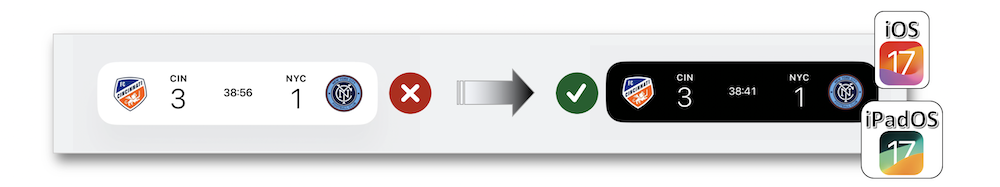

WWDC 2023: Live Activities
Find hereafter a detailed summary of three videos that belong to a taxonomy of some WWDC footages.
The original videos are available on the Apple official website (session 10184, session 10185, session 10194).
"Live Activities are a glanceable way for someone to keep track of the progress of a task within your app. We'll teach you how you can create helpful experiences for the Lock Screen, the Dynamic Island, and StandBy. Learn how to update your app's Live Activities, monitor activity state, and take advantage of WidgetKit and SwiftUI to build richer experiences."
"Discover how you can remotely update Live Activities in your app when you push content through Apple Push Notification service (APNs). We'll show you how to configure your first Live Activity push locally so you can quickly iterate on your implementation. Learn best practices for determining your push priority and configuring alerting updates, and explore how to further improve your Live Activities with relevance score and stale date."
"Live Activities allow your app to display live information in key system locations on iOS and iPadOS. Learn the best way to create graphically rich layouts that update seamlessly on the Lock Screen, in StandBy, and in the Dynamic Island. Incorporate interactivity and animation to help people stay in touch with live updating events from your app as they navigate outside of your app."
Hereafter, the underlined elements lead directly to the playback of the WWDC video at the appropriate moment.
Overview #
Live Activities are the best way to follow an event or a task progression in real time instead of using a huge number of notifications to reach the same goal.
They can be displayed through the Dynamic Island available after a certain model of iPhone (the compact, minimal and expanded presentations are explained in the BuildUI section).
The new Standby feature and iPadOS 17 are good candidates for these activities to improve the user experience supported by the API.

Based on the Activity framework used by SwiftUI and WidgetKit, the Live Activities rely on some best practices to be followed.
Design #
Lock Screen #
Located above the usual notifications on the lock screen, the Live Activities should have a dedicated interface so as to be undoubtedly identified.
The importance of maintaining a graphical consistency shouldn't be removed in the Dark Mode.

Using bold colors is a good way to highlight some elements in the widget.
The layout should adapt the display of information according to their relevance.
Whatever the native default transitions (numeric or replace content transitions...) or some customized ones, smoothness with unoverlapping and fading are important notions to be taken into account for transitions in the widget.
It's crucial to notify the user by means of an alert if an update requires his attention.
The standard notification sound combined with the screen lighting are the essential elements that point out an alert that should be highlighted by a specific graphical element as well.
Standby #
This iOS 17 new feature has an 2X scale-up process regarding the widget size so as to make the most of the screen size.
It automatically tailors the background color to the Live Activity's but special attention must be paid to the highlighted graphic elements that divide parts in the widget.

Besides checking the color contrast for accessibility, it's vital to inspect the widget's in order to have the best rendering that's offered by the night mode feature.
Dynamic Island #
Smoothness and fluidity are the main keywords that go with the Dynamic Island for outlining the essential information through animations.
It's of a major importance to have fluent rounded shapes with the Dynamic Island edges...
... and converting non rounded shapes into a blurry element is also a good trick to get an harmonious fit.
Some necessary advice should be known for perfectly designing the three size classes of the Dynamic Island detailed in the BuildUI section.
This view aims at keeping on using one's device whithout losing sight on the most important information about some running activities.
For this purpose, it's highly recommended to avoid useless spaces around the sensor region.
When alerting the user about a crucial information, it's better to expand the view instead of sending a notification.
When expanded, the view should keep the same information at the same location in order to be coherent and avoid a cognitive work for the user.
Better is the refinement regarding the spaces around the graphic items, better will be the user experience and more undetected will be the sensor region.
Appearing when switching between multiple apps while Live Activities are still alive, the minimal view aims at providing a relevant information through a teeny-weeny area that must be refined when devising the app.
Lifecycle #
Few milestones are mandatory for this first lifecycle step:
-
Implement the ActivityAttributes protocol to describe the dynamic and static contents.
-
Define a structure to outline the state and the configuration of the activity.
-
Request and start the
Live Activity.
When updating an activity, it's important to:
-
Identify what needs to be updated,
-
Create an alert for informing the user the update occurs if need be.
Using the ActivityStateUpdates structure is the best way to observe the four states an activity may encounter (started, finished, dismissed, stale) so as to provide the appropriate command to be executed as quick as possible.
Before ending an activity, it's important to create a final content combined with the policy the system should remove the Live Activity.
Build UI #
Besides the Lock Screen UI that displays the Live Activities under a usual notification aspect, it's important to notice that the specific Dynamic Island is made up of three distinct presentations:
To realize the interface introduced in the previous tab, the Live Activity configuration should be put in the WidgetBundle.
The implementation for the Lock Screen UI concerns the first closure of the configuration while the second one deals with the Dynamic Island whose size classes are detailed in the User interface tab of this section.
Notifications #
Preparations #
The basic understanding of what the interactions between an app, its content server and the Apple Push Notification Service are is of a great help for integrating the push updates.
Configuring Xcode and implementing the proper code for handling push tokens are madatory milestones.
Adding the push notifications service in Xcode is necessary for ActivityKit to request push tokens.
Few lines of code are required for enabling and handling push updates.
Due to the push token uniqueness for each activity, it's crucial to be aware of the appropriate one when dealing with the updates.
First push update #
Sending a push update relies on an HTTP request to APNs.
Besides the normal HTTP headers to be used, the APNs headers are threefold.
The first APNs payload to be sent is made up of three essential fields.
For testing, using command lines may be the quickest way to achieve one's goal through executing a curl command for sending the APNs request.
Debugging updates failures #
Priorities #
Priorities have different purposes and their characteristics may impact the way they will be introduced in an app.
When frequent updates are necessary, useful details have to be taken into account for avoiding the cons of such events.
Even though enabled, the user has still control over the updates frequency of which the server needs to be aware.
Alerts #
In order to point out some elements or events for capturing the user's attention, the APNs payload is added a complementary object for which localization and sound customization are possible.
Miscellaneous #
Ending a Live Activity is triggered thanks to a new event value in the APNs payload.
Informing the user of outdated updates can be displayed through an added stale date field in the APNs payload and a dedicated property in the ActivityConfiguration.
Ordering the notification stack on the Lock Screen in case of multiple Live Activities is handled by the system with the ones with more important updates set near the top.
Besides, the most important Live Activity is also displayed in the Dynamic Island by the system that follows the indication of the relevant-score field in the APNs payload.